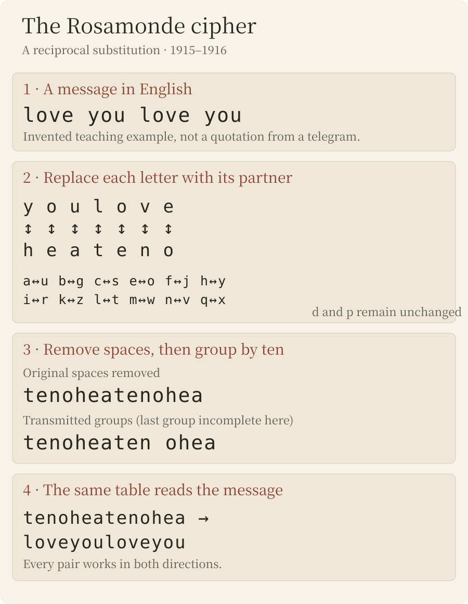

Discovery
The Rosamonde telegrams
In 1915 and 1916 the Japanese police copied dozens of telegrams made of meaningless words — heaitolloi, coohavbhea, tenocrszqu — addressed to “Rosamonde”, in Shanghai or in Tokyo. They lay in the archives without a translation. They are in English, enciphered by a simple letter substitution. As far as we know, they are the earliest known writings of the relationship between Sun Yat-sen and Soong Ching-ling (“Rosamonde”), eight months before their marriage.

The archives
From 1913 to 1917, the Communications Bureau of the Japanese Ministry of Communications had every telegram received or sent by Sun Yat-sen's circle, then in exile in Tokyo, copied for the Foreign Ministry. The copies form the series 特定人ノ発受郵便物取調 (“inquiry into the mail of designated persons”), kept in the Diplomatic Archives and digitised by the Japan Center for Asian Historical Records (JACAR). The political telegrams of 1916 in this series, in condensed Chinese telegraph code, were deciphered by Daniel Bourdeau[1].
The 1915 volumes (JACAR B03050087600 and B03050087700) contain another family of telegrams: ten-letter words in which consonants and vowels mix without any pattern, with recurring groups (hea, lyu, ound). They leave Tokyo in the name of 頭山滿 (Tōyama Mitsuru, Sun's neighbour and protector) for two Shanghai addresses — “Laisaosang, 445 Chaoufoong Road” and “Rosamonde, 628 E. Yuhang Road” — and, in 1916, travel between Shanghai and “Rosamonde Tokio”. No translation accompanies the copies.

The system: English, letter for letter

The plaintext is telegraphic English, without spaces, cut into ten-letter words. Each letter is replaced by its partner in a table of reciprocal pairs: the same table enciphers and deciphers.
a↔u b↔g c↔s e↔o f↔j h↔y i↔r k↔z l↔t m↔w n↔v q↔x — d and p unchanged
So you is written hea and love is written teno — and several plain-language telegrams of March 1915 addressed to Rosamonde are simply signed “teno”. Proper names, numbers and reply addresses stay in clear (“Inuzuka”, “100000”).

February – July 1915
Deciphered texts as written, telegraphic abbreviations included (ye for you, Yoko for Yokohama); in square brackets, letters corrected (copying confusions) or restored; “…”: passage not read. On 21 February the word happy is left in clear in the middle of the cipher.
| Date | From → to | Deciphered text |
|---|---|---|
| 17/2/1915 | Tokyo → Laisaosang Sun Yat-sen → Soong Ching-ling | Your letter [o]f the eight received. My life is [s]afe agai[n], I [ha]ve to thank you. Did you get my l[a]st cable? |
| 20/2/1915 | Tokyo → Rosamonde, 628 E. Yuhang Road (signed “Hata”) Sun Yat-sen → Soong Ching-ling | Must an[s]wer cable to Chu's yesterday. HATA |
| 21/2/1915 | Tokyo → Laisaosang Sun Yat-sen → Soong Ching-ling | I am so happy, tha[n]k[s] to you. |
| 23/2/1915 | Tokyo → Laisaosang Sun Yat-sen → Soong Ching-ling | Yes, I'll save you or die myself if fail. But you must b[e] strong too. |
| 25/2/1915 | Tokyo → Laisaosang Sun Yat-sen → Soong Ching-ling | With de[vou]t love I ask ye to throw of[f] Yung at once. If not I will surely die. I could throw of[f] … and sacrificed 100000 yu[a]n for you. Why are you [t]roubl[e] over a house a[n]d automobile? Now the [q]ues is: are you go[i]ng to cut h[i]m?Yung: a suitor of Ching-ling, perhaps the match her father preferred; his Chinese name is not known (see below). |
| 26/2/1915 | Tokyo → Laisaosang Sun Yat-sen → Soong Ching-ling | Whenever ye see Yung you inflict tor[t]ure [u]pon me, and the [p]ain will surely react on you more i[n]tens[e], for our souls are mingled i[n]to one. You can't esca[p]e. |
| 3/3/1915 | Tokyo → Laisaosang Sun Yat-sen → Soong Ching-ling | Thirst[y] for hearing from you. An[s]wer. |
| 9/3/1915 | Tokyo → Laisaosang (30 words) Sun Yat-sen → Soong Ching-ling | [J]oy and ho[p]e return to me with your cable yes[ter]day. Many tha[n]k[s]. I just goin[g] … I a[m] well and sound usual. E[x]ecu[t]e your agreement at once, I b[i]d you [e]agerly. Your father su[r]prised me by a cal[l] t[h]is morni[ng]. (middle passage not read) |
| 11/3/1915 | Tokyo → Laisaosang Sun Yat-sen → Soong Ching-ling | What make ye cabled me so urgent yesterday? Re[p]ly by ci[p]her. Must write it at home, never do it in office, for [t]hey see. You don't use code book, so they can get our secrets by guessing. Write me often, [p]lease do. |
| 12/3/1915 | Tokyo → Laisaosang Sun Yat-sen → Soong Ching-ling | Shall I tell father that you coming by Korea? Answ[er]. |
| 15/3/1915 | Tokyo → “Miss Nit”, steamer Korea (wireless) Sun Yat-sen → Soong Ching-ling | Who coming with you? Do father know when to meet ye? Are you land Kobe or Yoko? Re[p]ly [q]uick so that I may know what to do for your landing. Love. |
| 10/6/1915 | Tokyo → Laisaosang Sun Yat-sen → Soong Ching-ling | Are you forgot me? Why not write and se[n]d the [p]hoto? |
| 7/7/1915 | Shanghai → Rosamonde, Tokio Soong Ching-ling → Sun Yat-sen | Lovesick … in torture. Be merciful. Come or free me forever. |


May 1916

In April 1916 Sun left Japan to lead the rising against Yuan Shikai from Shanghai; Soong Ching-ling, now his wife, at first stayed in Tokyo. The same cipher resumes at once (transcribed blind before the key was found):
| Date | From → to | Deciphered text |
|---|---|---|
| 1/5/1916 | Nagasaki → Rosamonde, Tokio Sun Yat-sen → Soong Ching-ling | [In]te[n]s[e] love a[n]d ma[n]y k[is]ses to you. |
| 4/5/1916 | Shanghai → Rosamonde Sun Yat-sen → Soong Ching-ling | Safel[y] la[n]d Fre[n]ch concess[i]on yesterday, no[w] very busy now. Love from devoted husba[nd]. |
| 8/5/1916 | Tokyo → “Junzaburo”, Shanghai (form signed 中山) Soong Ching-ling → Sun Yat-sen (probable) | [I]s [i]t true y[o]u are going to Canton soon? |
| 10/5/1916 | Shanghai → Rosamonde Sun Yat-sen → Soong Ching-ling | [I] not go to Canton. You can come here an[y] t[i]me, b[u]t do[n]'[t] take iro[n] trunk, leave [i]t to Mr Inuzuka's care. Do you understand? |
| 11/5/1916 | Shanghai → Rosamonde Sun Yat-sen → Soong Ching-ling | D[a]rl[ing], have you [r]eceive cable a[sk] [y]ou to come he[r]e a[n]d do you know that iron trunk mus[t] be g[i]ve[n] to M[r] Inuzuka to take care. Love a[n]d k[is]ses to m[y] own w[i]f[e]. |
| 12/5/1916 | Shanghai → “Nakayama, 109 Harajuku, Tokio” Sun Yat-sen → Soong Ching-ling | Cha[ng] K[i] [r]etur[n] Tok[i]o [i]s not true. D[i]d y[o]u [re]ceive two former ca[bl]es ask you to come back a[n]d g[i]ve the iro[n] tru[n]k [to] M[r] Inuzuka's [c]are? Have y[ou] done so? Fo[r] [I] [a]m very [anxi]ous about the t[r]unk, fo[r] [i]t [i]s ve[ry] d[an]ge[r]ou[s] fo[r] [y]ou to take [i]t yourself. Do [y]o[u] [q]uite cl[e]a[r] w[h]at [I] mea[n]? A[ns]wer at once. Husb[and]. address Murai 317 Joffra |
| 13/5/1916 | Tokyo → “Junzaburo”, Shanghai (form signed 中山) Soong Ching-ling → Sun Yat-sen (probable) | [Pl]ease tell [T]ai h[i]s w[i]fe com[in]g also. Rosamonde. Porthos. |
Letters in brackets: letters that the form gives differently, or leaves out; the check on the images of 15 October 2026 confirmed that these are errors of the form itself, not of the reading. The telegraph clerk often wrote n for v, i for r, y for h: confusions of cursive handwriting (these letters are unlike in Morse). The end of husband, on 4 and 12 May, is missing because the last cipher word stops at ten letters. As in 1915, a few words are left in clear: Inuzuka, iron, trunk, know, own and, on 13 May, Rosamonde and Porthos. The word count written on each form, address included, matches the copied groups exactly: no word is missing.
These telegrams answer one another, and they cross-check Chinese telegrams on the Telegrams page:
- Canton. On 8 May, from Sun's house in Tokyo (form signed 中山, address Harajuku): “Is it true you are going to Canton soon?” On the 10th Sun answers: “I not go to Canton.”
- Zhang Ji. On 11 May a Chinese telegram from the same house asks: 「聞張繼已回日，頗奇，是否？」 (it is said Zhang Ji has returned to Japan; is it true?) (0042b). On the 12th Sun answers in enciphered English: “Chang Ki return Tokio is not true.”
- The iron trunk. On 10, 11 and 12 May Sun insists: she must not carry the iron trunk herself, “very dangerous”, but leave it with Inuzuka Shintarō. On the 12th a Chinese telegram from Tokyo reports: 「箱已交犬塚，十五日附法船…」 (the trunk has been handed to Inuzuka; on the 15th, by a French ship…) (0045a).
- The departure. On 13 May Tokyo wires: “Please tell Tai his wife coming also. Rosamonde. Porthos.” Porthos is no doubt the French liner of the Messageries Maritimes; “Tai” may be Dai Jitao, who signs “Tai” in 1917. Soong Ching-ling joined Sun in Shanghai on 19 May 1916[3].
Who is writing to whom?
“Rosamonde” (or “Rosamond”) is Soong Ching-ling's English name; “Rosamonde Tokio” is the telegraphic address of Sun's household in 1916[1]. Several independent facts fit a correspondence between Sun Yat-sen, in Tokyo, and Soong Ching-ling, in Shanghai:
- The dates. Ching-ling left Japan for the family home in Shanghai on 28 October 1914 and did not come back until 17 March 1915[3]. The telegrams from Tokyo to Shanghai run from 17 February to 12 March; the one of 15 March is sent by wireless to the steamer Korea, which brings her back: “Are you land Kobe or Yoko?”. She left again for Shanghai on 3 May; the telegrams resume on 10 June. On 7 July it is from Shanghai that “Lovesick … in torture…” is sent to “Rosamonde, Tokio”: the telegraphic address then serves Sun's household, and the message is probably Ching-ling's reply.
- The relay address. On 2 and 4 February 1915, Zhu Zhuowen (朱卓文, “Chu” in the romanisation of the time), Sun's envoy in Shanghai, wrote to him that he had fitted out a room next to his own as an “office” for Miss Soong — on the pretext of English lessons for his daughter — “to escape her mother's suspicion”, and that she could be written to at that address[2]. On 20 February Tokyo wires: “Must answer cable to Chu's yesterday.”
- The rumour of March 1915. On 9 March three plain-language telegrams leave Shanghai: “wire health condition”, “wire Toyama's true conditions immediately”, and, to “Rosamonde, Tokio”, “Is recovery hopeless? If not will execute agreement. Reply urgent. Teno” — teno is love enciphered. That evening Tokyo answers in cipher: “I am well and sound usual. Execute your agreement at once, I bid you eagerly.” The next day Sun asks Shanghai, in an entirely different code (a condensed Chinese telegraph code): 上海近日有何謠言關[於]弟自[身]安寧者否？請覆，並[囑]同人勿信。文 (“What rumours are going round in Shanghai these days about my safety? Reply, and tell the comrades not to believe them. — Wen”). Two independent systems tell the same story. On 11 March a plain-language telegram from Shanghai announces: “Leaving zego by Korea, coming, father await” — zego is Kobe enciphered.
- Who is “Yung”? A suitor of Soong Ching-ling, whose Chinese name is not known. Apart from these telegrams, he appears only in a letter from Charlie Soong, her father, to Sun Yat-sen, dated 3 August 1915: a certain “Yung” and a certain “Dan Chung” often visited his daughter, without her wishing to marry either; as Sun had asked, Sun's letter and Yung's were burned. For the historian Yang Tianshi, who published the letter, Yung was perhaps the match the father preferred[2]. The telegrams name him five months earlier, in February 1915: on the 25th Sun asks “throw of[f] Yung at once” and “are you go[i]ng to cut h[i]m?”; on the 26th he writes “Whenever ye see Yung you inflict tor[t]ure [u]pon me”.
- The secret. Soong Ching-ling was, by her own account, in charge of Sun's telegraphic codes[3]. The telegram of 11 March gives security instructions: encipher at home, never in the office, and beware of a cipher without a code book, which can be guessed.
- 1916. The telegrams of May 1916 are signed “devoted husband” and addressed to “my own wife”; they follow Sun's arrival in Shanghai (landing, French concession) and his known circle (Inuzuka Shintarō).
Who stands behind the address “Laisaosang”, and Yung's Chinese name, are still unknown.
How we established it
- Transcription. The forms were read on the JACAR scans (200 dpi), twice and independently: by Claude, then by Brice Dudout blind, line by line, without seeing either the first reading or the plaintext (89 % of letters identical). The May 1916 telegrams had been transcribed blind before the key was found. The published text keeps, word by word, the reading that gives the better English; both readings are preserved.
- Statistics. The index of coincidence of the letters (0.062) is that of a natural language, not of an enciphered code; f and q never occur; the trigram hea comes back ten times.
- Key search. Simulated annealing over all 26-letter substitutions, then over reciprocal substitutions only, scored by an English quadgram model; an English text enciphered with a random key serves as a control and is recovered at 100 %.
- Out-of-sample validation. The key taken from the 1915 telegrams alone (Claude's reading) reads the 1916 transcriptions made blind: score −5.97 against −8.01 ± 0.27 for 2,000 random reciprocal tables (best: −6.93), i.e. z = 7.5. It reads Brice Dudout's blind rereading of 1915 in the same way: −5.27 against −8.02 ± 0.25 (best: −6.87), z = 10.9. A telegram in another system (3 March 1916) stays unreadable (z = 0.6).
- Edition. Each word read is compared with the cipher expected from the proposed plaintext: the differences are limited to the usual confusions of the copyists' cursive (n/v, i/r, g/p, a/u, e/c, a doubled or dropped letter).
What remains uncertain
- In the eleven complete telegrams of 1915, about 45 letters out of 750 are corrected (6 %), nearly all copying confusions. Still uncertain: eight words in the middle of 9 March, one word on 25 February (“throw of[f] …”) and the ending of “de[vou]t”, one group on 7 July; in 1916, two names, “Chang Ki” (Zhang Ji?) and “Tai” (Dai Jitao?); the letters in brackets, checked on the images, are errors of the forms.
- The identification of sender and addressee rests on cross-checks: no form bears their names.
- We have found these telegrams neither in the work on the 1916 intercepts[1], nor in the historiography of the marriage[2, 3], nor in the biography by J. Chang and J. Halliday[4]. Other works remain to be checked.
Sources
- D. Bourdeau, Sun Yat-sen's circle on the wire, 1916–17, “Unsolved Historical Ciphers” ledger, 2026 (CC BY 4.0).
- Yang Tianshi 楊天石, “宋嘉樹與孫中山、宋慶齡的婚姻 — 讀宋嘉樹復孫中山英文函”, Bainian chao 百年潮, 2001, no. 12.
- Zhu Jiulin 朱玖琳, “從檔案文獻看孫中山與宋慶齡的婚姻”, Jindai Zhongguo 近代中國, vol. 25, 2016, pp. 50–70.
- J. Chang, J. Halliday, Mme Sun Yat-sen (Soong Ching-ling), Penguin, 1986.
- JACAR, 外務省記録 1.6.1.4-2-1-2, 特定人ノ発受郵便物取調, vol. 1: B03050087600 (8/1 – 11/3/1915), B03050087700 (March 1915 – Feb. 1916); vol. 3: B03050089000 (29/4 – 22/5/1916).